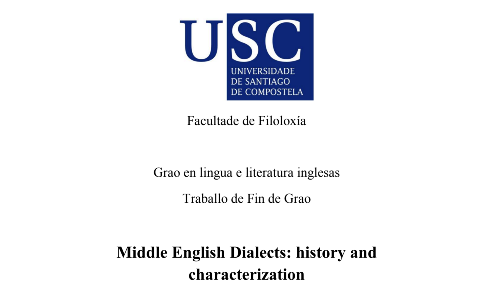

About me
I'm an intern web developer currently enroled in the SoftwareOne Academy program. I'm eager to better understand the nuances related to the web development world and, doing so, enhancing my academic foundations as well as complementing my interpersonal skills. My previous degree in English philology has and will be a great asset for any project, as it taught me the patience needed for a good result and attention to detail.
Also an avid sportsperson, I would regard myself as a very competitive person. So you can expect me to give it the beans everytime!


Languages
Spanish, Galician, English, Italian and Portuguese. As a graduate in English philology, I have experience dealing with teaching a foreign language. Also, as a consequence the nature of my studies, I'm confident when it comes to speaking with and to a wide audience of different nationalities.
Working as a team is essential to me. I'm proud to consider myself as a great asset to any team. I regard myself as an assertive and always possitive person, always trying to improve the atmosphere and morale of the team!.
Teamwork
Java
Nowadays a web development student, I'm learning more advanced implementations of span object oriented programming. To do so, I'm managing to learn Java language and its more advanced techniques. With much yet to learn but unlimited motivation, I would like to further my knowledge not only in Java but in other programming languages such as Python or C#.

Passionate about designing UI/UX with a high level of attention to detail. I trully love designing visuals from scratch and, although my artistic skills are yet to develope, I'm confident in the stylistic features for a slick and modern design. For that, I find both HTML and CSS more like a puzzle that has the potential to bring to life any website and product.
HTML/CSS

- 
- PROJECT 3
- PROJECT 4
- PROJECT 5